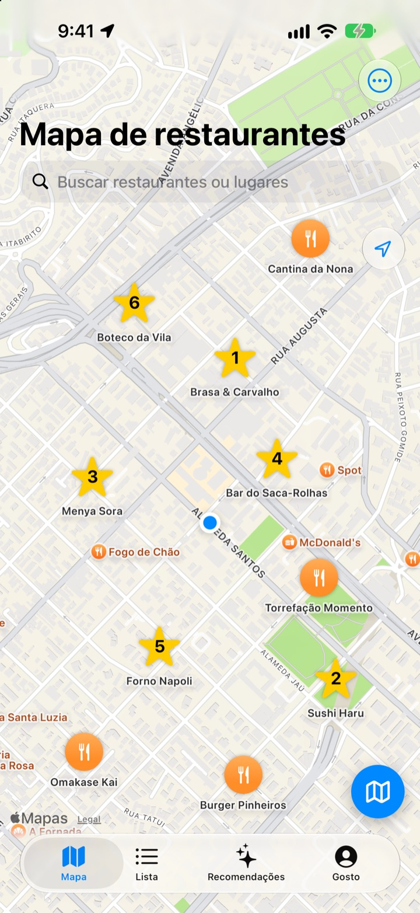
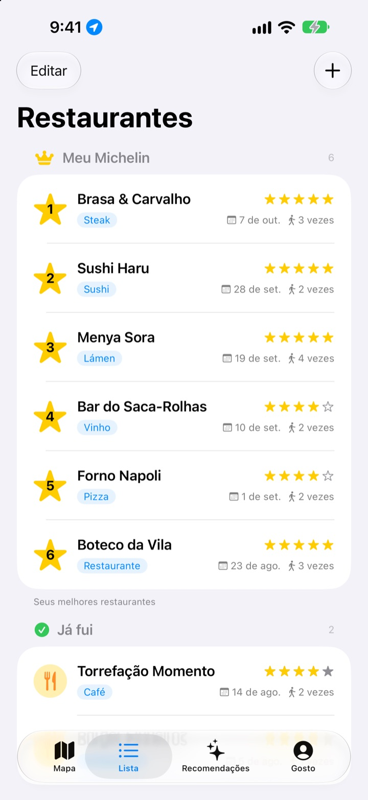
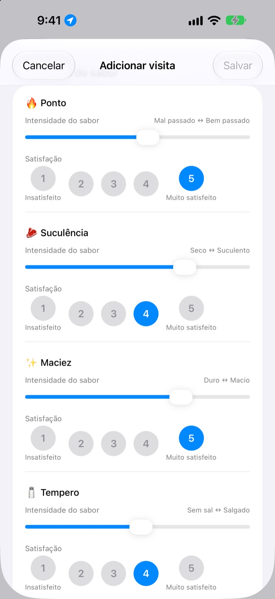
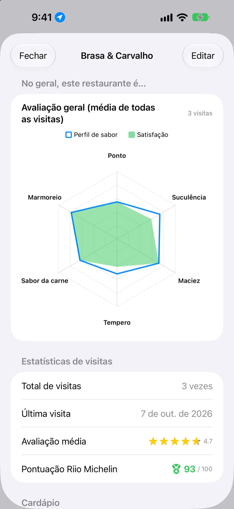

Aquele lugar incrível,
você não esquece mais
Marque no mapa os restaurantes onde já foi e os que quer conhecer, e a cada visita anote o que pediu, as fotos e o sabor. Quando bater a dúvida de onde comer, suas anotações respondem.
Todos os recursos são gratuitos. Sem cadastro, tudo fica no seu iPhone.

Avalie um prato
Escolha um tipo de comida e marque a intensidade de cada sabor e o quanto você gostou. Os mesmos critérios e o mesmo cálculo de uma visita no app.
Era ótimo, mas o que foi que eu pedi?
Você lembra que adorou o restaurante, mas o nome está meio apagado, e o que pediu ou se o caldo estava salgado já nem lembra. Aí pesquisa de novo e lê avaliação de estranhos. O Insaeng guarda num mapa o que você mesmo provou, para a próxima escolha vir da sua experiência.
Já fui, Quero ir e o seu próprio Michelin
Pesquise no mapa ou toque num lugar próximo para salvar na hora. Separe os lugares onde já foi dos que quer conhecer, e ranqueie seus seis favoritos de 1 a 6.
Quando alguém pedir uma dica, é só mostrar a lista.

Perguntas que combinam com o prato
A intensidade de cada sabor, como pimenta ou sal, vai num controle deslizante, e o quanto você gostou é avaliado à parte, de 1 a 5. No bife contam o ponto e a suculência; no sushi, o arroz e o peixe; no lámen, o caldo e o macarrão.
Cada visita também guarda prato, fotos, estrelas e anotações.

Onde vale voltar, em números
Com mais visitas, cada restaurante mostra uma avaliação geral com a média de todas elas e uma Pontuação Riio Michelin de 0 a 100 que junta estrelas e satisfação.
Ao sair de um restaurante salvo, pouco depois chega um lembrete para registrar a visita.

Comece em três passos
- 1
Salve um restaurante
Pesquise no mapa ou toque num lugar próximo.
- 2
Registre a visita
Prato, fotos, estrelas e sabor. A avaliação de sabor é opcional.
- 3
Escolha o próximo
Veja seu top 6 e as pontuações e vá com Mapas, Kakao Map ou Naver Map.
O que se avalia em cada prato
- 🍽️ Geral
- Picância, Intensidade, Doçura, Salgado, Gordura, Sabor natural
- 🥩 Steak
- Ponto, Suculência, Maciez, Tempero, Sabor da carne, Marmoreio
- 🍣 Sushi
- Shari (arroz), Neta (cobertura), Wasabi, Equilíbrio, Moldagem, Temperatura
- 🍜 Lámen
- Caldo, Macarrão, Chashu, Coberturas, Temperatura, Equilíbrio
- 🍕 Pizza
- Massa, Molho, Queijo, Ponto, Coberturas, Equilíbrio
- 🍷 Vinho
- Corpo, Taninos, Acidez, Aroma, Final, Equilíbrio
- ☕ Café
- Acidez, Corpo, Sabor, Retrogosto, Doçura, Equilíbrio
As demais comidas são avaliadas com os critérios gerais da primeira linha. Você também pode criar suas próprias categorias.
Perguntas frequentes
Como adiciono um restaurante?
Digite o nome do restaurante no campo de busca no topo do mapa e toque em “Adicionar aos meus restaurantes” no resultado. Você também pode tocar em um lugar próximo que aparece no mapa para adicioná-lo na hora. Se o lugar não aparecer na busca, adicione-o manualmente na sua localização atual ou no ponto que escolher no mapa.
O que são “Já fui”, “Quero ir” e o Top 6?
Já fui – Restaurantes onde você já esteve. Neles você pode registrar suas visitas. Quero ir – Restaurantes que você quer conhecer um dia. Depois de ir, mude para “Já fui” na tela de detalhes do restaurante. Top 6 (Meu Michelin) – Os seis restaurantes que você mais ama, ranqueados do 1º ao 6º lugar. Um restaurante marcado como “Quero ir” não pode entrar no Top 6.
Preciso avaliar o sabor?
Não, é opcional. Se avaliar, a intensidade do sabor e a satisfação entram na avaliação geral do restaurante e contam para a Pontuação Riio Michelin.
Quando chega a notificação “Como foi sua visita hoje?”
Se você ficar mais de 5 minutos perto de um restaurante salvo e depois sair, a notificação chega cerca de 40 minutos depois. Para isso, é preciso permitir a localização “Sempre” e as notificações. Se não quiser receber essas notificações, desative-as em Ajustes > Apps > Insaeng ou mude a localização para “Durante o Uso do App”. A verificação da localização acontece somente no aparelho; seus deslocamentos não são salvos nem enviados para fora.
Dá para usar o app sem permitir a localização?
Dá, sim. Você pode escolher um ponto no mapa para adicionar restaurantes e registrar suas visitas. Só não ficam disponíveis a exibição da sua localização atual e o lembrete depois da visita.
A busca de lugares não mostra resultados
A busca de lugares precisa de conexão com a internet. Tente outro nome ou uma palavra-chave mais curta. Se ainda assim não encontrar, escolha um ponto no mapa e adicione manualmente.
Onde ficam meus registros? Eles sincronizam com outros aparelhos?
Restaurantes, registros de visitas e fotos ficam salvos somente neste iPhone. A versão atual não oferece sincronização com outros aparelhos, e o backup e restauração no iCloud dos ajustes também ainda não funciona. Os dados do app entram no backup completo do iPhone (backup do iCloud ou no computador).
Quero apagar todos os registros
Nos ajustes da tela do mapa, toque em “Excluir todos os dados” para apagar os restaurantes e os registros de visitas. Não é possível desfazer, então tenha cuidado. Para apagar também todas as fotos, sem deixar nada, exclua o app.
Se eu apagar e reinstalar o app, meus registros continuam lá?
Não. Como os registros ficam salvos só no aparelho, eles são apagados junto com o app. Lembre-se disso antes de excluí-lo.
É tudo grátis mesmo?
Sim. Todos os recursos são gratuitos, sem anúncios e sem conta. “Apoie o desenvolvedor” nos ajustes é totalmente opcional e não libera nada a mais.
Se a sua dúvida não estiver respondida acima, fale conosco direto pelo app em Ajustes > Suporte ou mande um e-mail para mizzking75@gmail.com. Informe a versão do app, o modelo do iPhone e o que você fez em qual tela, assim conseguimos verificar mais rápido.